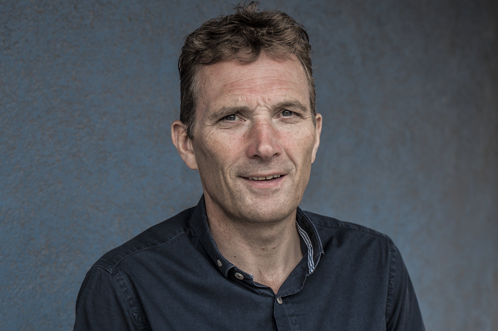
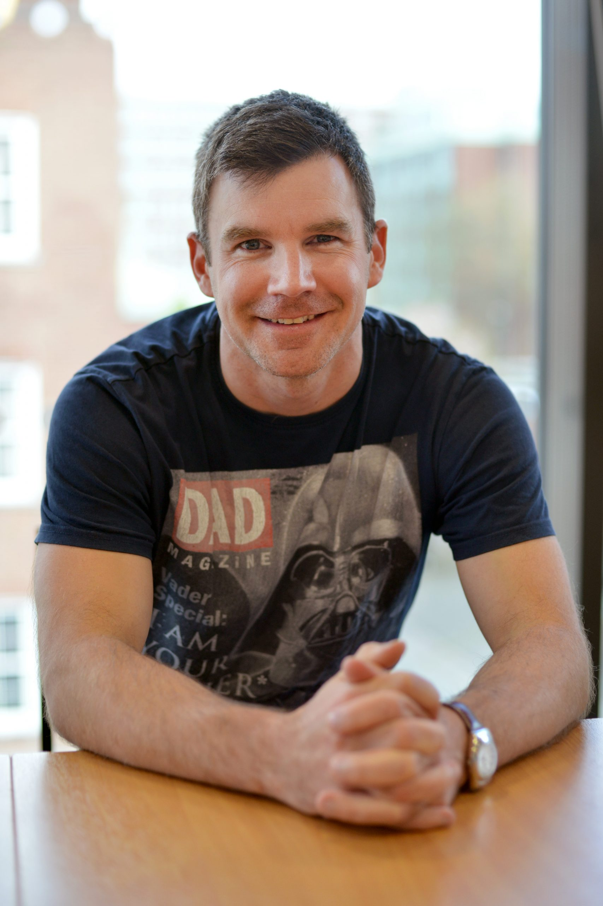

Team
| Picture | Name | Biography | Affiliation |
|---|---|---|---|
|  | Prof. Stuart Allan | Stuart is a Professor of Neuroscience and was previously based at Manchester’s Faculty of Life Sciences. Professor Allan achieved a BSc degree in Pharmacology from the University of Dundee in 1990 before completing a PhD in Biomedical Sciences at the University of Aberdeen in 1993. | University of Manchester |
|  | Prof. David Brough | Inflammation is our body’s response to infection and injury. It is generally beneficial promoting resistance, repair and recovery. However, when the process of inflammation is not controlled properly it becomes damaging. This is the case during chronic diseases such as atherosclerosis, diabetes, Alzheimer’s disease, and after acute injuries such as stroke. There are many aspects of the inflammatory response that are not known. Through increased understanding of inflammation we may identify new drug targets that could ultimately reduce the severity of many diseases. My lab aims to understand the molecular and cellular mechanisms that contribute to inflammation. | University of Manchester |
| Prof. Colm Cunningham | My main research interests are in neurodegeneration and in brain inflammation. In particular, I am interested in how systemic insults such as infection, inflammation and injury interact with, and influence, ongoing neurodegeneration and associated brain inflammation. I have an ongoing interest in sickness behaviour responses induced by bacterial and viral infections/mimetics and our observation of an exaggeration of these responses in animals/persons with ongoing brain inflammation has brought 2 of my major interests together: Such responses in the aged or demented incorporate episodes of delirium, a phenomenon that remains unexplained and which now represents a major research interest for me. I have been awarded Fellowships by the Wellcome Trust to develop animal models of delirium during dementia and I maintain long-standing collaborations, with the department of Experimental Psychology in Oxford University and the CNS inflammation group in the University of Southampton, exploring some of these issues. More recently we have been funded by the NIH and Simon’s Foundation (USA) to study the interactions between systemic inflammation, brain metabolism and cognitive function in models of hypocholinergic function, brain amyloidosis and autism. Collectively, these avenues are aimed at moving towards defining the role of activated microglia in ageing and neurodegenerative disease, while considering the impact of systemic infections on the brain in multiple vulnerable neurodegenerative and neurodevelopmental states. As an experimental approach, I believe in the need for the combined molecular, behavioural and neuropathological / neuroanatomical study of animal models of disease and CNS dysfunction. | Trinity College Dublin |